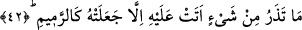

gelen bir rivâyete göre de bu rüzgâr batı rüzgârıdır. Bu rivâyeti, Rasûlullah (s.a.)’in
“Âd kavmi debûr (batı) rüzgârıyla helâk edildi. Bana ise sabâ (doğu) rüzgârıyla
yardım verilmiştir”[22] hadisi destekler.
Debûr rüzgârı sabâ rüzgârının karşıtıdır. Çünkü debûr batıdan, sabâ rüzgârı ise
doğudan eser. İbnu’l-Müseyyeb, akîm rüzgârının, kuzeyden esen sâm yelinin karşı
yönündeki güney rüzgârı olduğunu söylemiştir. Kuzey rüzgârı da kuzeyden gelip doğu
yönüne doğru esen rüzgârdır.
42. Üzerinden geçtiği şeyi canlı bırakmıyor, onu kül edip savuruyordu.
“Üzerinden geçtiği hiçbir şeyi canlı bırakmıyor” yâni üzerlerinden geçtiği canlarını,
evlerini, mallarını ve hayvanlarını “kül gibi” un ufak çürümüş kırıntılar “edip
savuruyordu.” “Ramîm”, kemik, bitki, kurumuş ot ve benzeri gibi çürüyüp kırıntı hâline
dönüşmüş olan nesnelere verilen addır.
Kâmus’ta bu fiil kemikler için kullanılmış ve “ramîm”in çürümüş kemik parçaları
olduğu vurgulanarak mâzi, muzâri ve masdar babları
verilmiştir.
Müfredât’da “rimme” kemik, “rumme” çürük ip, “rimm” odun, ot ve samanın
kırıntıları mânâlarıyla tahsis olunmuşlardır.
İbn Abbas (r.anhumâ) şöyle demiştir: “Âd kavmine gönderilen rüzgâr tıpkı benim şu
yüzüğümde olduğu gibi vukû bulmuştur.” İbn Abbas’ın bu sözü şu mânâya gelmektedir:
Allah akîm rüzgârını tıpkı onun yüzüğünün deliğinden çıkması gibi yerin altından
çıkartarak göndermiş ve onları bununla helâk etmiştir. Bu sözde akîm rüzgârının şiddeti
ve onun, yerin altından gelerek vücûd arzının altındaki hevâ rüzgârına karışmış
olduğuna da işâret olunmuştur. Gerçekten de o rüzgâr çok şiddetli idi. Estiğinde ortada
hiç bir memleket bırakmamıştır. Ve yine bu rüzgâr Allah Teâlâ’nın celâl ve kahır
rüzgârıdır. Öyle ki, o estiği zaman nefisleri kötü vasıflarından temizleyip, onlardan
hiçbir eser bırakmaz. Akîm rüzgârı beden arzında, âsıf ve kâsıf fırtınaları da rûh
denizinde eserler.
Rasûlullah (s.a.) şiddetli rüzgârlar estiği zaman Allah Teâlâ’ya sığınırdı.[23] Akıllı
olan kimse de böyle helâk edici şeylerden Allah’a sığınsın. Zira nefis, kemâlini
bulmadan sûrî bir helâkla yok edilirse bütün kazancında zarar etmiş olur. Aynı şekilde
bu durum kalp için de geçerlidir. Çünkü mânevî kalp ölürse kişinin hayatının hiç bir
yararı ve mânâsı kalmaz.
Hasan Basrî’ye şöyle sordular: “Ey şeyh, kalplerimiz uykudadır, sözlerin bize hiçbir
şekilde tesir etmiyor, ne yapmamız gerekir?” Hasan Basrî şöyle cevap verdi: “Keşke
kalpleriniz uykuda olsaydı, çünkü uyuyan dürtmekle uyandırılabilir; fakat sizin